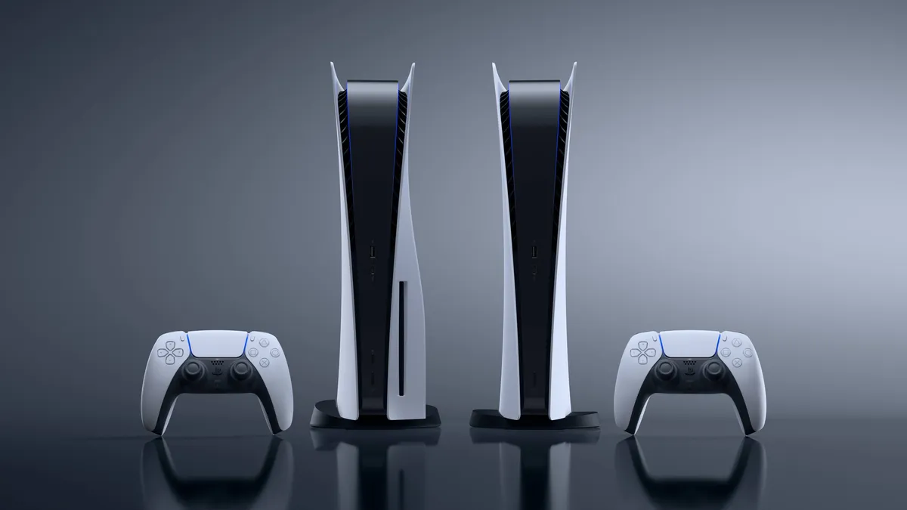
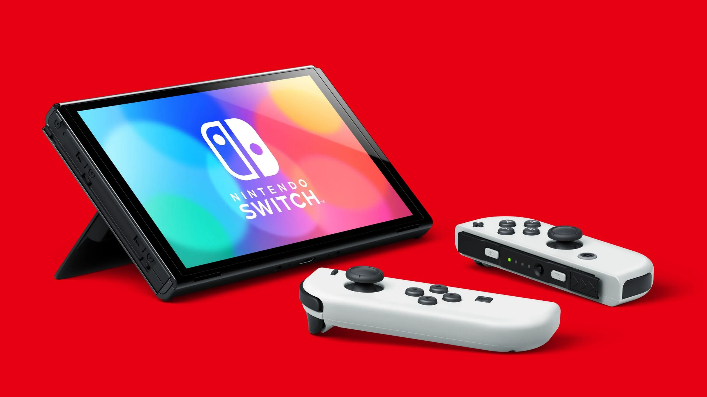
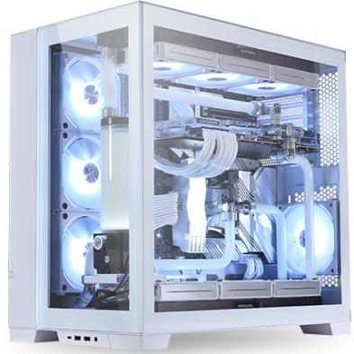

Xbox Series X

La Xbox Series X es la última consola de Microsoft. Cuenta con un potente hardware y ofrece una experiencia de juego de próxima generación. Tiene soporte para resolución 4K y ofrece una amplia gama de juegos exclusivos de Xbox.
Características destacadas:
- Procesador AMD de última generación
- Gráficos de alta fidelidad con trazado de rayos
- Almacenamiento SSD ultrarrápido
- Compatibilidad con versiones anteriores de juegos de Xbox
PlayStation 5
La PlayStation 5 es la consola de última generación de Sony. Presenta gráficos impresionantes y una amplia biblioteca de juegos exclusivos. Con su controlador DualSense, brinda una experiencia de juego inmersiva con respuesta táctil y háptica.
Características destacadas:
- Procesador de 8 núcleos AMD Zen 2
- Gráficos de alta calidad con trazado de rayos
- Almacenamiento SSD de alta velocidad
- Tecnología de audio 3D
Nintendo Switch
El Nintendo Switch es una consola híbrida que se puede usar tanto en el televisor como en modo portátil. Es conocida por sus juegos divertidos y coloridos, con títulos icónicos de Nintendo como Super Mario, The Legend of Zelda y Pokémon.
Características destacadas:
- Versatilidad para jugar en modo TV o portátil
- Juegos exclusivos de Nintendo
- Multijugador local y en línea
- Amplia biblioteca de juegos independientes
PC Gaming
El PC gaming ofrece una amplia variedad de opciones para los jugadores, con posibilidades de personalización y una gran cantidad de juegos disponibles. Puedes construir un PC a medida con componentes de alta gama para obtener el máximo rendimiento en tus juegos favoritos.
Características destacadas:
- Posibilidad de personalizar y actualizar los componentes
- Amplia variedad de juegos disponibles
- Gráficos de alta calidad y rendimiento
- Comunidad de jugadores activa
Otras Consolas
- Xbox One
- PlayStation 4
- Nintendo 3DS